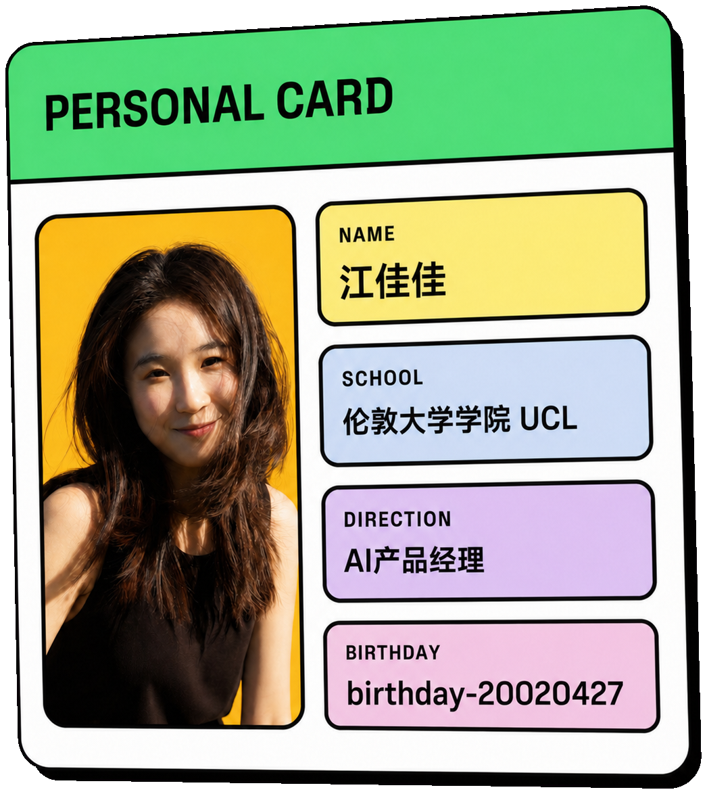
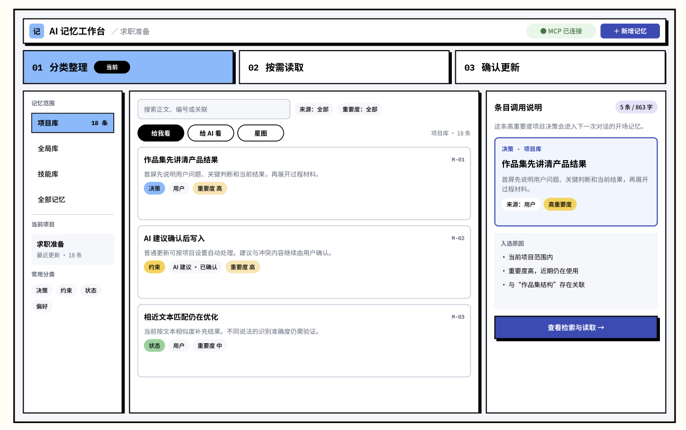
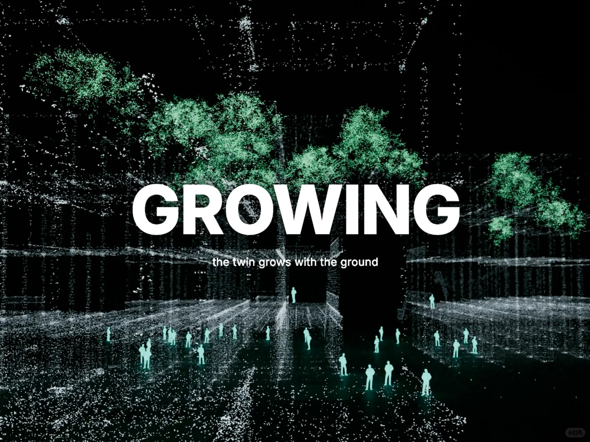

《硅谷101》E245
GPT 的回复是怎样写出来的
我更想听清两件事：内容与品味怎样变成产品竞争力，非技术背景的判断怎样交给工程团队。
去听这一期 ↗关于我
我在浙江长大，本科读风景园林，后来到 UCL 学习城市设计。空间设计训练让我习惯从现场出发，整理图纸、模型和多源数据，再从人、环境、流程和规则之间寻找关系。
在 UCL，我经常面对没有标准答案的开放问题。从提出假设、分析数据，到推演方案和接受评审，这段训练让我学会在信息不完整的情况下组织问题、表达判断并持续修改。
毕业设计期间，我开始把生成式 AI 和 AI 编程用于研究、建模和动画表达。工具用得越深入，我越在意前面的判断：问题该怎样定义、功能怎样取舍、方案怎样验证。
此后，我独立推进 AI 记忆产品和古建成果归档产品，把系统分析、信息组织和方案推演能力带进产品实践，也明确了 AI 应用产品经理的求职方向。

我还不知道几年后的自己会走到哪里。现在想做的，是继续学习、继续实践，把每一次选择认真做完。
最近在学
个人经历
专业排名 1/46；在设计训练中形成空间分析、信息组织和项目表达能力。
参与商业景观与竞赛项目，负责前期分析、参数化建模、图纸和汇报材料，也维护多项目文件与版本。
研究空间数据、数字化设计和复杂系统推演；毕业设计中持续尝试生成式 AI 与 AI 编程。
围绕跨对话记忆断裂，完成需求排序、功能架构、原型开发和持续使用验证。
研究创作者发布后的复盘流程，完成需求判断、MVP、验收指标和低保真原型。
比较相关行业流程，梳理资料治理、成果生成、质量责任与持续归档能力。
持续记录 AI 工作流、产品实践和设计工具；精选内容会在网站保留原文入口。
继续研究新工具和真实需求，把想法做成原型，在使用中一点点改好。

AI × 古建保护 · 独立研究
把现场照片、资料、人工复核和成果归档串成一条可查询、可追溯的工作流程。
查看项目公开内容
毕业设计

在小红书观看完整视频 ↗其他实践
联系我
目前关注上海的 AI 应用产品经理机会，欢迎通过下面的方式联系我。